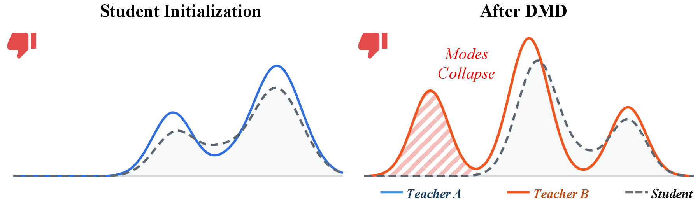
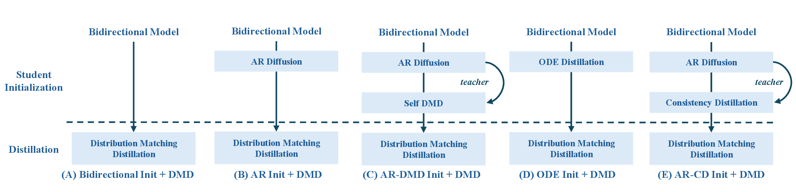
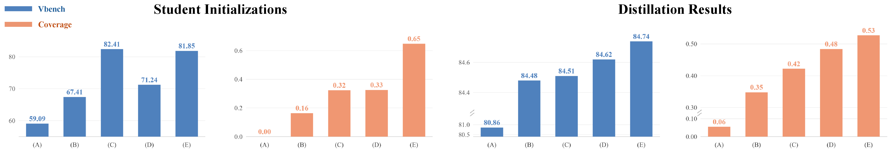
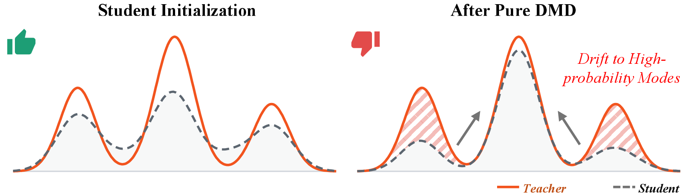
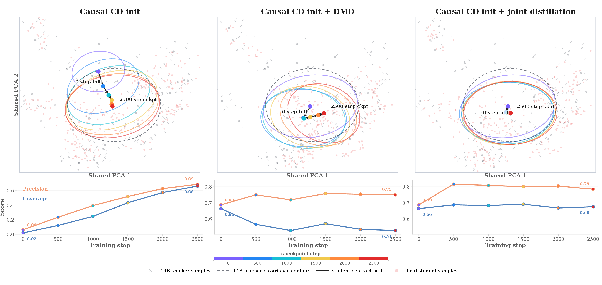

Overview
Existing multi-stage distillation pipelines often decouple pre-DMD initialization from DMD refinement: the initialization is trained to match base-model trajectories or external video data, whereas DMD refines toward a separate—often stronger—diffusion teacher, so the two stages implicitly pursue different target distributions, with initialization quality judged mainly by visual scores such as VBench. We revisit this from a distributional perspective: pre-DMD initialization is mode-covering and fixes which teacher modes are available, while DMD is mode-seeking and only redistributes mass within that support. A good initialization is thus one whose coverage matches the target DMD teacher, rather than one that merely looks sharp.
To analyze this, we introduce a distributional evaluation protocol that measures precision and coverage between student and teacher distributions in a shared latent feature space, revealing differences hidden by visual scores. Furthermore, even when target distributions are aligned, pure DMD can still drift toward high-probability teacher regions in late training, reducing coverage and diversity. To address this, we propose joint distillation, combining DMD's mode-seeking objective with CD's mode-covering constraint. Notably, even with a Wan-1.3B DMD teacher, our method outperforms baselines refined with Wan-14B, highlighting the value of the distributional perspective in autoregressive video distillation.
Method & Findings
We read multi-stage distillation through the divergence each stage implicitly optimizes — initialization covers the teacher's modes, DMD seeks them. With a metric that actually measures coverage, two failure modes turn into testable hypotheses, each backed by its own controlled experiments.
ODE / consistency-distillation initialization is mean-seeking: it spreads student mass to cover the teacher's support, reaching more modes but leaving samples blurry or under-refined.
Distribution Matching Distillation is a reverse-KL objective: it sharpens high-probability modes around the current student, improving fidelity but able to collapse onto a few modes.
We embed student features U = {ui} and teacher features V = {vj} with a frozen V-JEPA2 encoder, and estimate teacher support with an adaptive k-NN radius rk(vj) — the distance from each teacher sample to its k-th nearest teacher neighbor. Against this support we report two complementary quantities:
Precision asks whether student samples fall inside teacher support (fidelity); Coverage asks how many teacher neighborhoods are reached by some student sample (mode coverage). To compare initializers fairly, we first apply a shared teacher-normalized re-noising that cancels low-level sharpness gaps while preserving the semantic region each initializer reaches — giving us the tool that makes the next two hypotheses testable.
When the initialization and DMD target distributions are misaligned, DMD seeks modes outside the student's support and provides unsupported gradients, causing coverage collapse.

Hypothesis & validation · Controlled target-distribution swap
| Init. Target | DMD Teacher | Matched | VBench ↑ | Coverage ↑ |
|---|---|---|---|---|
| Wan-14B | Wan-14B | ✓ | 84.74 | 0.648 |
| Wan-1.3B | Wan-1.3B | ✓ | 84.50 | 0.516 |
| Wan-14B | Wan-1.3B | ✗ | 84.16 | 0.503 |
| Wan-1.3B | Wan-14B | ✗ | 83.89 | 0.453 |
Even a weaker teacher/data wins when the two stages are matched: final quality tracks alignment, not teacher scale.
Rethinking distillation pipelines
Fixing the target distribution (Wan-14B) and its distillation data, we vary only the initializer across five pipelines — (D) ODE and (E) AR-CD correspond to Self-Forcing and Causal-Forcing.


We found even when targets are aligned, long-term reverse-KL refinement keeps pushing the student toward the teacher's high-probability regions, steadily shrinking quality and diversity.

Hypothesis & toy experiment · Late-stage drift
| Step | 0 | 500 | 1000 | 1500 | 2500 |
|---|---|---|---|---|---|
| VBench ↑ | 82.60 | 84.44 | 84.74 | 84.21 | 83.90 |
| Diversity ↑ | 1.319 | 1.297 | 1.292 | 1.285 | 1.272 |
VBench first rises then falls, while diversity drops monotonically — drifting to high-density modes does not keep improving quality.
Visualizing the drift · distribution trajectory
Tracking checkpoints in a shared V-JEPA2 PCA space makes the drift visible: Causal CD initialization first expands to cover the teacher, but pure DMD then contracts toward its high-density regions, losing coverage and diversity.

Our fix · Joint distillation
To counter the drift, we couple the mode-seeking objective with a mode-covering constraint under the same target distribution:
ℒjoint = ℒDMD + λ ℒCD
The CD term anchors coverage while DMD sharpens modes, so joint distillation matches teacher high-density regions while preserving broad coverage — the rightmost panel above.
Results
On VBench text-to-video, our matched joint distillation achieves the best overall score and the strongest coverage among distilled autoregressive models — even the weak variant, refined with only Wan-1.3B, surpasses baselines refined with Wan-14B.
| Method | DMD Teacher | VBench ↑ | Precision ↑ | Coverage ↑ | Diversity ↑ |
|---|---|---|---|---|---|
| LTX Video | – | 81.37 | – | – | 1.281 |
| Wan2.1-T2V-1.3B | – | 83.56 | – | – | 1.334 |
| CausVid | Wan2.1-14B | 83.03 | 0.51 | 0.21 | 1.223 |
| Self-Forcing | Wan2.1-14B | 84.21 | 0.78 | 0.53 | 1.269 |
| Causal-Forcing | Wan2.1-14B | 84.38 | 0.61 | 0.29 | 1.250 |
| Ours (weak) | Wan2.1-1.3B | 84.54 | 0.77 | 0.59 | 1.305 |
| Ours (full) | Wan2.1-14B | 84.83 | 0.79 | 0.69 | 1.304 |
VBench is the weighted overall score; precision and coverage are teacher-normalized against the listed DMD teacher; diversity is the raw Vendi score. Ours (weak) with a Wan-1.3B teacher already beats Wan-14B-refined baselines on overall score and coverage.
Sharper subjects, stronger motion, and more temporally coherent details than bidirectional and distilled autoregressive baselines.
Under fixed prompts and different seeds, our method preserves richer appearance and motion variation while keeping high fidelity.
@article{li2026distillalign,
title = {From Alignment to Balance: Mode Coverage and Mode Seeking in Autoregressive Video Distillation},
author = {Li, Jiaxing and Zou, Kai and Huang, Kaichen and Gao, Junyao and Wang, Zile and Liu, Yang and Liu, Bin and An, Bo and Li, Yangguang},
year = {2026}
}